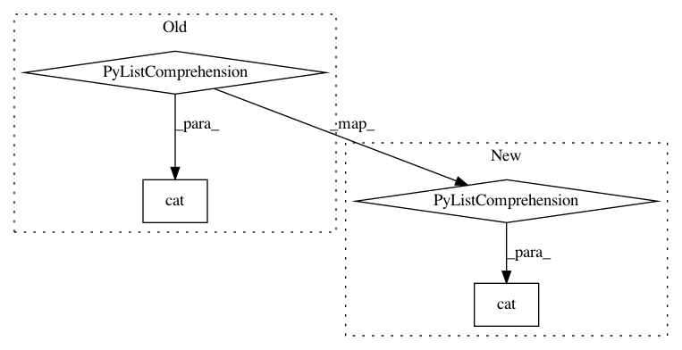

447444fd06594e531ae1141afac78051481e4468,catalyst/rl/offpolicy/algorithms/td3.py,TD3,_base_loss,#TD3#Any#Any#Any#Any#Any#,107
Before Change
for x in self.critics
]
// B x num_heads x num_critics
q_values_tp1 = torch.cat([
x(states_tp1, actions_tp1).squeeze_(dim=3)
for x in self.target_critics
], dim=-1)
// B x num_heads x 1
q_values_tp1 = q_values_tp1.min(dim=-1, keepdim=True)[0].detach()
// B x num_heads x 1
After Change
]
// {num_critics} * [bs; num_heads; 1]
q_values_tp1 = [
x(states_tp1, actions_tp1).squeeze_(dim=3)
for x in self.target_critics
]
// {num_critics} * [bs; num_heads; 1] -> concat
// [bs; num_heads; num_critics] -> min over all critics
// [bs; num_heads; 1]
q_values_tp1 = (
torch.cat(q_values_tp1, dim=-1)
.min(dim=-1, keepdim=True)[0]
)
In pattern: SUPERPATTERN
Frequency: 3
Non-data size: 4
Instances
Project Name: catalyst-team/catalyst
Commit Name: 447444fd06594e531ae1141afac78051481e4468
Time: 2019-10-31
Author: scitator@gmail.com
File Name: catalyst/rl/offpolicy/algorithms/td3.py
Class Name: TD3
Method Name: _base_loss
Project Name: catalyst-team/catalyst
Commit Name: 447444fd06594e531ae1141afac78051481e4468
Time: 2019-10-31
Author: scitator@gmail.com
File Name: catalyst/rl/offpolicy/algorithms/sac.py
Class Name: SAC
Method Name: _base_loss
Project Name: OpenNMT/OpenNMT-py
Commit Name: 685126644ae540be72eb662527269a0395e2c9eb
Time: 2017-09-05
Author: bpeters@coli.uni-saarland.de
File Name: onmt/IO.py
Class Name:
Method Name: make_features